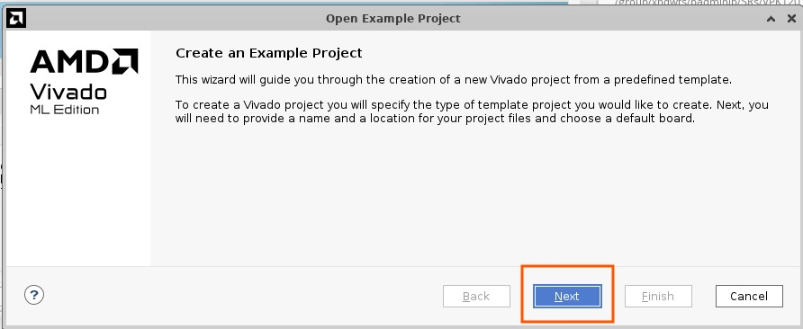
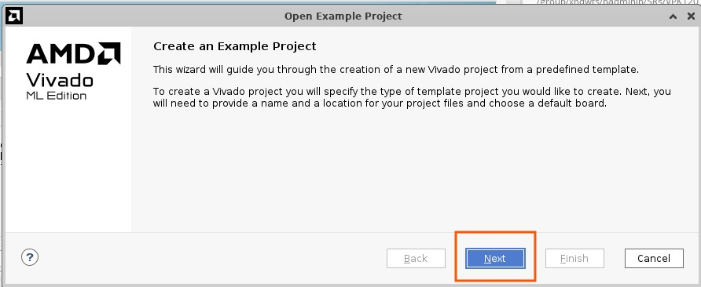

ELF File Generation Steps¶
Clone embeddedsw repo from Xilinx GitHub in the desired folder:
git clone https://github.com/Xilinx/embeddedsw/tree/xlnx_rel_v2023.2
Open Vitis 2023.2 and create a new workspace directory.

Apply the “embeddedsw” repository in Vitis:
In Vitis, navigate to Vitis → Software Repositories.
Click the New tab, select embeddedsw, and click OK.
 

Create an application project for Vitis.
Select Create new platform from hardware (XSA) and provide the path to the 2023.2 design. Then, click Next.
Enter the project name and target details, then click Next.
On the Domain page, you can leave the default settings as they are and click Next.
Select Hello World and click Finish.

Click on Navigate to BSP Settings. In the list of drivers, scroll down and select the XDMA_0 driver, then choose the Import Examples option, as shown below.

Build the application by pressing Ctrl + B.
The generated xdmapcie rc enumerate example ELF can be used to test enumeration and BAR access in XDMA PL-PCIe4 RC bridges. This example initializes the XDMA PCIe IP and demonstrates how to enumerate the PCIe system.
Note
This example should only be used when the XDMA PCIe IP is configured as a root complex. The code illustrates how to use the XDMA PCIe IP and its standalone driver to:
Initialize an XDMA PCIe IP core built as a root complex
Enumerate PCIe endpoints in the system
Assign BARs to endpoints
Find capabilities on endpoints
Please note, this example only enumerates and initializes PCIe endpoints.